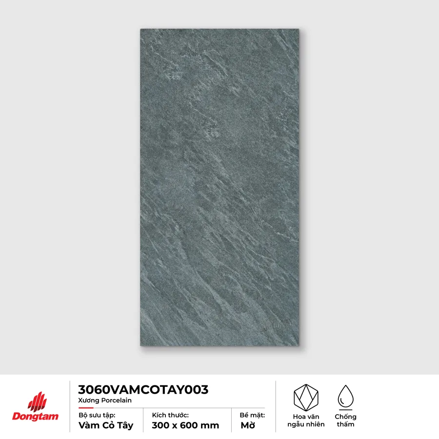
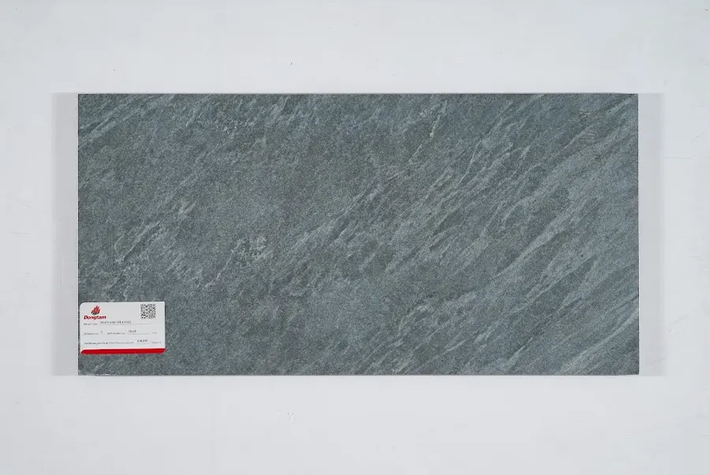
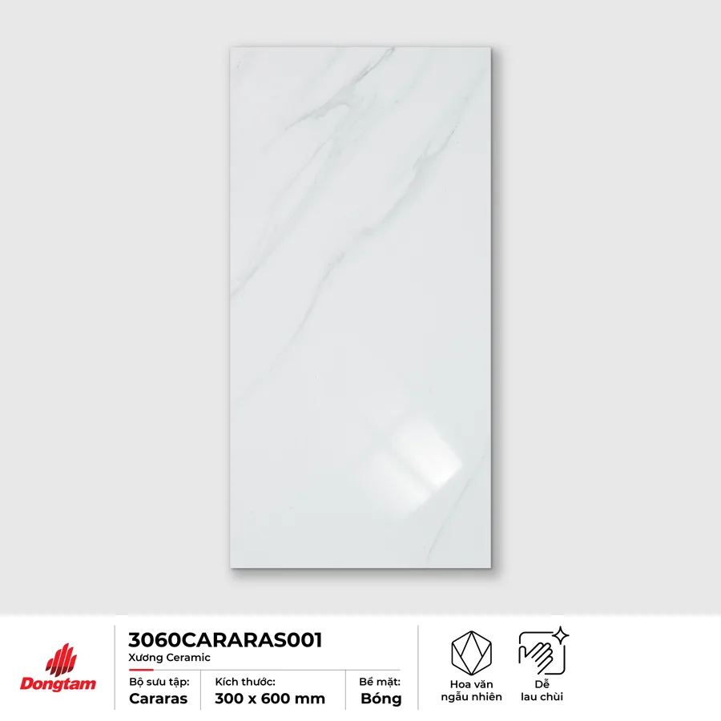

Bài viết · Gạch theo không gian
Nhà tắm hay trơn trượt: chọn gạch lát nhà tắm thế nào cho cả nhà an toàn?

Nhà tắm nhỏ, lúc nào cũng có nước, lại có xà phòng và dầu gội. Chỉ cần một vệt nước còn đọng là đủ để trượt chân. Người lớn tuổi và trẻ nhỏ là những người dễ gặp nguy hiểm nhất.
Nhiều gia đình gặp cùng một chuyện sau khi ở một thời gian:
Phần lớn lỗi này không nằm ở tay thợ, mà ở lúc chọn gạch. Chọn đúng từ đầu thì sẽ không phải đục lên làm lại.
Sàn và tường nhà tắm làm hai việc khác nhau, nên anh chị đừng chọn chung một loại cho cả hai.
| Sàn nhà tắm | Tường nhà tắm | |
|---|---|---|
| Bề mặt | Mờ (men matt) | Bóng, dễ lau |
| Chất gạch | Porcelain | Ceramic hoặc Porcelain |
| Khổ hay dùng | 30x60, 40x40, 30x30 | 30x60, 40x80 |
| Màu | Xám, nâu nhạt | Trắng, xám nhạt, be |
Dưới đây là hai mẫu mờ dòng GECKO để lát sàn, một mẫu mờ VAMCOTAY tông xám, và một mẫu Ceramic bóng vân đá để ốp tường:

 GECKO 01030x60 · 274.000 đ/m²
GECKO 01030x60 · 274.000 đ/m²
 GECKO 00640x40 · 249.000 đ/m²
GECKO 00640x40 · 249.000 đ/m²

VAMCOTAY 00330x60 · 238.000 đ/m²
 CARARAS 00130x60 · 258.000 đ/m²
CARARAS 00130x60 · 258.000 đ/m²Dòng GECKO có tính năng chống trượt theo thông tin của hãng. Khi xem mẫu ở đại lý, anh chị có thể hỏi thêm thông số cụ thể của từng mã.
Lát sàn bằng gạch mờ khổ vừa, có độ dốc về phễu thu, thì nước không đọng lại và chân bước chắc hơn. Tường gạch bóng sáng màu làm nhà tắm sạch và thoáng. Sàn tông xám đỡ phải cọ rửa hằng ngày. Cả nhà, nhất là ông bà và các con, dùng nhà tắm thoải mái hơn.
Vài lưu ý nhỏ khi làm nhà tắm:
Anh chị xem thông tin từng mẫu ở các trang sản phẩm phía trên, rồi nhờ đại lý Đồng Tâm gần nhất báo giá và tư vấn số lượng theo diện tích nhà tắm.
GECKO 01030x60 · 274.000 đ/m²GECKO 00640x40 · 249.000 đ/m²VAMCOTAY 00330x60 · 238.000 đ/m²CARARAS 00130x60 · 258.000 đ/m²Giá và chương trình thay đổi theo từng thời điểm; đại lý báo giá chính xác và chiết khấu theo công trình. ← Tất cả bài viết